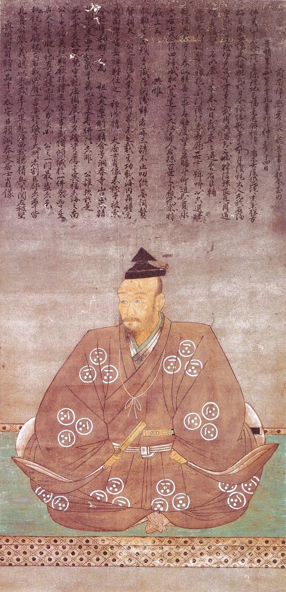
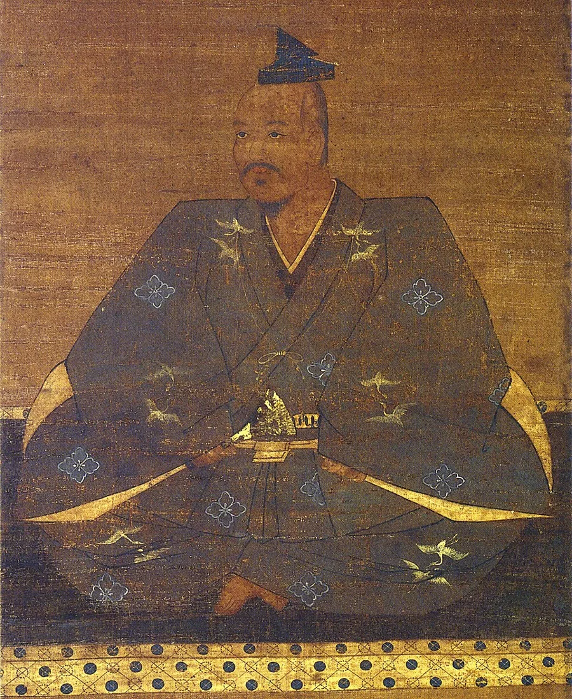
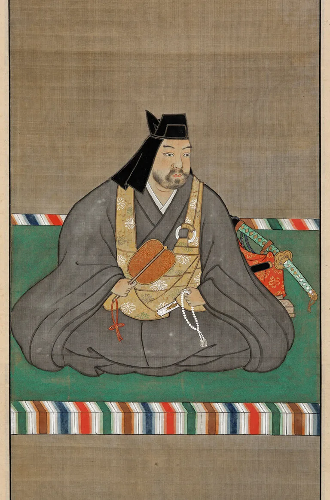
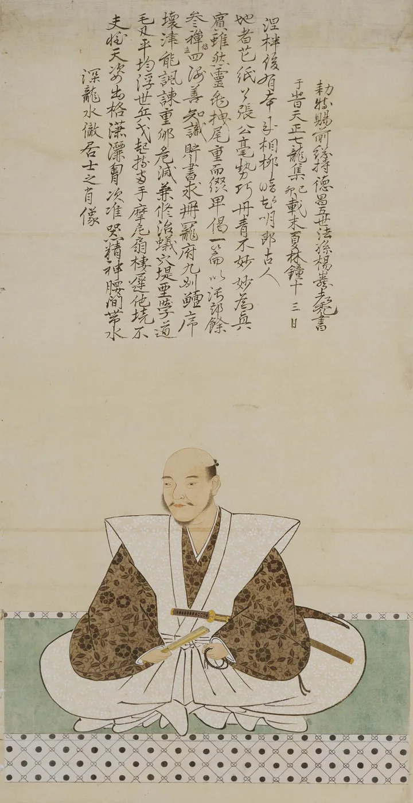
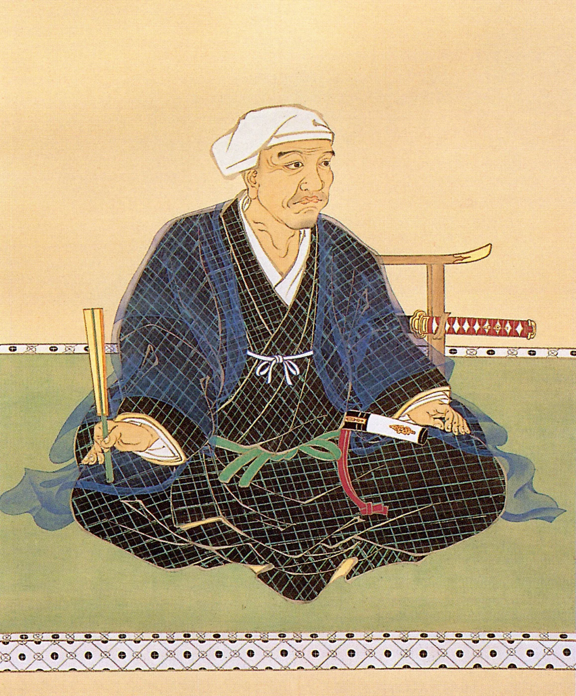
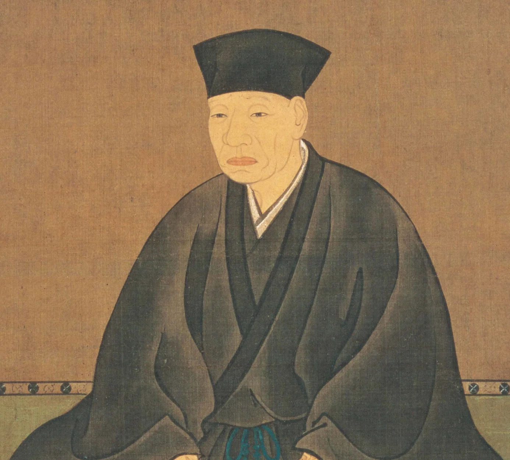

戦国の人物図鑑いまさら聞けないニッポン人
戦国時代の人物を、活躍した順に1人ずつ。60秒の動画と、生涯の要点・よくある疑問をまとめました。
戦国編（登場順）

其の一北条早雲戦国時代の先がけとなった武将・北条早雲（ほうじょうそううん）です。

其の二斎藤道三「美濃のマムシ」と呼ばれた戦国武将・斎藤道三（さいとうどうさん）です。

其の三毛利元就みなし子同然の少年が、中国地方10か国の主に
其の四今川義元お寺の修行僧が、三つの国を治める大名に

其の五武田信玄父を国から追い出した男

其の六上杉謙信寺に預けられた少年が、信玄の宿敵に

其の七織田信長「大うつけ」と呼ばれた若者が、天下にいちばん近づく

其の八足利義昭僧になるはずだった男が、将軍になる

其の九浅井長政妻の兄にそむいた若者が、29歳で最期を迎える

其の十お市の方2度の落城を経験した女性

其の十一竹中半兵衛わずかな手勢で主君の城を乗っ取った若者

其の十二明智光秀前半生が謎の男が、主君を討つ

其の十三豊臣秀吉身分の低い生まれの男が、天下を統一

其の十四黒田官兵衛約1年牢に閉じ込められた男が、天下人を支える

其の十五柴田勝家水がめを割って兵をふるい立たせたと伝わる男

其の十六前田利家主君に仕えることを禁じられた男が、加賀藩の祖に

其の十七千利休天下人の茶をつかさどった男が、その天下人に切腹を命じられる
長編 非業の最期をとげた戦国の人10人（11分45秒）
わが子の軍に攻められた父、腹を切らされた茶人、妻や子まで命を奪われた跡継ぎ。思いがけない最期をむかえた10人を、亡くなった年の順にたどります。